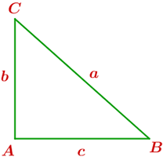

Ejercicios interactivos de razones trigonométricas
Elige la opción correcta:
1La inversa del coseno es ...
2La inversa de la tangente es ...
3La cosecante es ...
4El resultado de multiplicar el coseno por la secante de un mismo ángulo es ...
5El resultado de multiplicar el seno por la secante de un mismo ángulo es ...
6De las siguientes igualdades la correcta es ...
7De las siguientes igualdades la correcta es ...
8De las siguientes igualdades la correcta es ...
9En la circunferencia goniométrica el seno corresponde a ...
10En la circunferencia goniométrica el coseno corresponde a ...
11En la circunferencia goniométrica el coseno corresponde al ...
12En la circunferencia goniométrica el seno corresponde al ...
13En el primer cuadrante ...
14En el cuarto cuadrante ...
15En el primer cuadrante ...
16En el tercer cuadrante ...
17En el segundo cuadrante ...
18En el cuarto cuadrante ...
Elige la opción correcta atendiendo al siguiente triángulo rectángulo:

19
20
21
22
23
24
Si tienes dudas puedes consultar la teoría